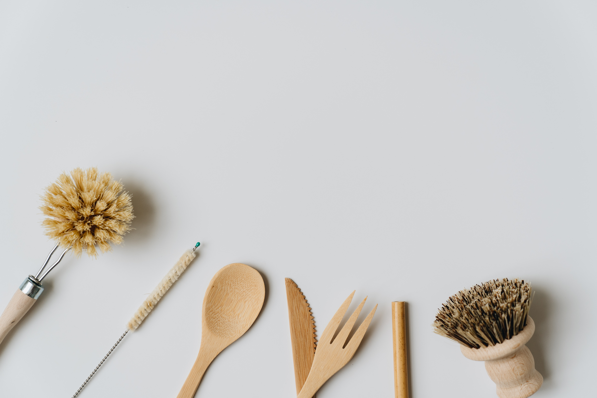
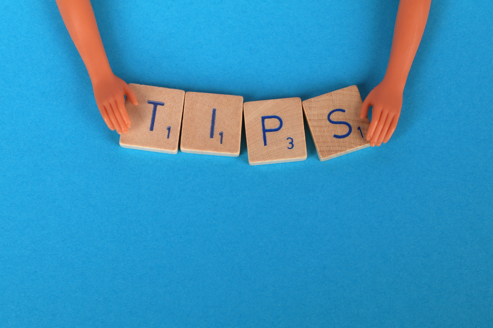

¿Cómo manipulamos los alimentos para celíacos?

Usá utensilios perfectamente higienizados para la preparación y cocción de alimentos aptos
para celíacos. En el caso de algunos utensilios, como espumadera, tostadora, colador de pastas u otro en el
que puedan quedar restos de alimentos, te recomendamos no utilizarlos para el manejo de productos sin
gluten.
Consejos para evitar la contaminación cruzada

Cuidado con los restos de migas en la mesa o superficies de la cocina, extremar la limpieza.
Tener tostador exclusivo para pan sin gluten.
No freír productos sin gluten en aceite donde se haya cocinado anteriormente productos con gluten.
Almacenar separadamente los productos sin gluten y tenerlos siempre identificados, bien con pegatinas,
etiquetas o envases de colores distintos.
Almacenar SIEMPRE los productos sin gluten arriba y debajo los con gluten para evitar que caigan restos, ya
sea en la nevera o los muebles.
A la hora de utilizar microondas poner un plato encima del plato sin gluten.
Si bien la mermelada, el queso de untar y mantequilla, son productos genéricos, es decir, que se pueden
utilizar de cualquier marca, es importante tener productos exclusivos para uso sin gluten porque si se
comparte por ejemplo el mismo frasco de mermelada, pueden quedar restos de miga de pan con gluten y así
contaminar al resto del producto. También se pueden usar monodosis o servir en un bol para evitar la
contaminación.
Se recomienda empanar todo sin gluten, si no es posible, realizarlo en momentos distintos y con la mesa y
utensilios completamente limpios.
Evitar los utensilios de madera ya que son porosos, es preferible utilizarlos de metal.
Si por error se ha utilizado un ingrediente que contiene gluten, no se puede quitar al final del proceso de
elaboración del mismo, quedando la preparación contaminada. Ejemplo, si en un guiso de lentejas se ha puesto
por error una marca de chorizo que contiene gluten y una vez finalizado se intenta quitar del plato, todo
ese preparado contendrá gluten, ya que le gluten no desaparece aunque el alimento esté sometido a altas o
bajas temperaturas.
Mitos vs Realidad de la celiaqía
Mito 1: Los celíacos son intolerantes o alérgicos al gluten.
REALIDAD: La Enfermedad Celíaca (EC) o celiaquía es una enfermedad autoinmune crónica y multisistémica
con base genética desencadenada por la ingesta de gluten.
Mito 2: La celiaquía tiene grados.
REALIDAD: No existen grados de celiaquía. No se es muy celíaco o poco celíaco. Los celíacos son más o
menos sintomáticos pero el daño interno es el mismo para todos.
Mito 3: La Enfermedad Celíaca sólo se da en la infancia.
REALIDAD: La Celiaquía se puede desarrollar y/o detectar a cualquier edad aunque los síntomas de la
enfermedad celíaca son diferentes según la etapa: celíacos en la infancia, celíacos en la adolescencia y
celíacos en la edad adulta.
Mito 4: Los síntomas de los celíacos son las diarreas y los vómitos.
REALIDAD: La celiaquía se trata de un trastorno “multisistémico”, de modo que puede afectar a múltiples
órganos y sistemas. No sólo las diarreas y vómitos deben ponernos a los celíacos en alerta.
Mito 5: Yo no soy celíaco o celíaca, soy intolerante al gluten.
REALIDAD: Existe el síndrome de “sensibilidad al gluten no celíaca” con síntomas similares a los celíacos
desencadenados por la ingesta de gluten. No es Enfermedad Celíaca (EC), pero el tratamiento es el mismo
que para los celíacos: dieta sin gluten estricta durante toda la vida.
Mito 6: A mi como celíaco no me pasa nada por tomar un poco de gluten.
REALIDAD: Por un poco, SÍ PASA. Aunque no haya síntomas externos, el daño intestinal es el mismo para los
celíacos. Recuerda: DIETA SIN GLUTEN ESTRICTA DURANTE TODA LA VIDA.
Mito 7: Los celíacos nos podemos curar con los años. La celiaquía desaparece con
el tiempo.
REALIDAD: Si se hace una dieta exenta de gluten de por vida desaparecerán los síntomas de la celiaquía y
enfermedades asociadas, pero la enfermedad celíaca no se cura ni tiene medicación a día de hoy.
Mito 8: Si el gluten es malo, todos deberíamos comer sin gluten, aunque no seamos
celíacos.
REALIDAD: ¡Ja! El gluten sólo afecta negativamente a las personas celíacas. Para una persona no celíaca
comer sin gluten no tendrá ningún beneficio ni peligro por el hecho de apartar el gluten de su dieta.
Mito 9: La dieta sin gluten adelgaza. ¡Qué suerte tienen los celíacos!
REALIDAD: ¡Jaja! La mayoría de los panes sin gluten o pasteles contienen muchas más grasas y azúcares que
sus equivalentes alimentos con gluten para conseguir la misma textura y esponjosidad.
Mito 10: Muchos restaurantes sin gluten informan de la presencia o ausencia de
gluten en sus platos para celíacos. No hay problema.
REALIDAD: ¡Noooooo! En las cartas y menús de los restaurantes “sin gluten” sólo se declaran por Ley los
alérgenos de los ingredientes de los platos, pero esto no es suficiente para los celíacos para poder
comer sin gluten con seguridad y garantía. Siempre debemos asegurarnos de que no hay trazas por la
posible CONTAMINACIÓN CRUZADA durante la elaboración.